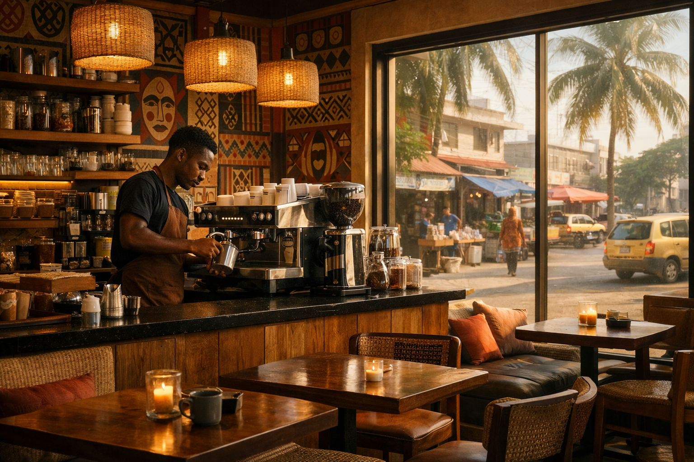

L'Or Noir du Bénin : Une Filière en Ébullition
Le Bénin, bien que modeste producteur, cultive un café Robusta aux arômes intenses, reflet de son terroir unique. La filière caféière béninoise connaît une dynamique de relance, avec des initiatives gouvernementales et privées visant à valoriser cette richesse agricole.

Production et Variétés
La production caféière béninoise est principalement axée sur le Robusta, une variété robuste et aromatique, parfaitement adaptée au climat tropical humide du sud et du centre du pays. Des efforts sont faits pour améliorer les techniques de culture et de transformation afin d'optimiser la qualité des grains. Bien que l'Arabica soit moins présent, des expérimentations sont menées dans les zones d'altitude pour diversifier l'offre.
Zones de Culture et Saveurs Locales
Les principales régions productrices se situent dans les départements du Zou, de l'Atlantique et de l'Ouémé. Le café béninois se distingue par ses notes terreuses, chocolatées et parfois épicées. Les producteurs locaux intègrent souvent des épices comme le gingembre, les clous de girofle ou le poivre long (Kili) pour créer des mélanges uniques, offrant une expérience gustative authentique et mémorable.
Actualités de la Filière (2025-2026)
La campagne agricole 2025-2026 est marquée par une volonté forte du gouvernement de soutenir la diversification agricole. Des mesures incitatives et des investissements sont mis en place pour accompagner les producteurs de café, améliorer les rendements et renforcer la chaîne de valeur. L'objectif est de positionner le café béninois sur les marchés nationaux et internationaux, en misant sur sa qualité et son authenticité.
Meilleurs Coffee Shops : Notre Sélection 2026
Découvrez les lieux incontournables pour déguster un café d'exception au Bénin et dans les grandes capitales africaines.
🇧🇯 Cotonou, Bénin
Koukas Cotonou
Le nouveau lieu tendance. Café de spécialité et pâtisseries fines dans un cadre moderne.
Coup de ❤️Fondation Zinsou
Alliez art et café. Un cadre paisible et culturel au cœur de Cotonou.
Oudy K Sô x Fourmé
Design épuré et café de qualité pour les amateurs de modernité.
🇳🇬 Lagos, Nigeria
Kaldi Coffee
Le pionnier de la torréfaction de spécialité au Nigeria. Grains frais garantis.
Art Cafe
Une ambiance bohème et artistique pour savourer votre boisson préférée.
🇸🇳 Dakar, Sénégal
Layu Café
Inspiré par la culture locale, c'est le lieu idéal pour le télétravail et le bon café.
Simone Cafe
Chaleureux et gourmand, parfait pour un après-midi détente.
L'Œil de Kevin : Moments & Inspirations
Suivez le parcours de Kevin à travers l'Afrique, entre spiritualité, fierté béninoise et passion pour les terroirs africains.

Inspiration : Un après-midi à Cotonou, entre tradition et modernité.
Café et Santé : Ce que la Science Révèle
🧠 Protection Cérébrale
Des études récentes (2025-2026) suggèrent que la consommation régulière de café peut contribuer à la protection du cerveau contre les maladies neurodégénératives.
❤️ Bienfaits Cardiovasculaires
De nouvelles recherches confirment que le café n'a pas d'effet hypertenseur à long terme et pourrait même protéger le cœur.
✨ Antioxydant et Anti-âge
Le café est une source majeure d'antioxydants, combattant les radicaux libres responsables du vieillissement cellulaire.
Le Cercle des Passionnés : Rejoignez-Nous
📚 Forum & Partage
Posez vos questions, partagez vos découvertes et connectez-vous avec d'autres amateurs de café du monde entier.
🍳 Recettes & Astuces
Partagez vos mélanges secrets (gingembre, clous de girofle) et apprenez des autres membres de la communauté.
🎉 Événements Café
Restez informé des dégustations, ateliers et rencontres près de chez vous ou en ligne.
Rejoignez @kevin48life et la communauté mondiale du café !
Rejoindre le Cercle